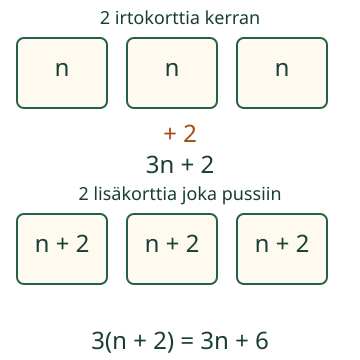

<link rel="stylesheet" href="lesson.css">

<section data-teaching-step="1" data-lesson-role="teaching-step">
<section class="lesson-intro"><h2>Kaksi korttia kerran vai joka pussiin?</h2><p>Aava pakkaa kolme samanlaista korttipussia. Lisäkorttien paikka muuttaa koko määrää.</p><p><strong>Muodostan tilanteesta lausekkeen ja tarkistan, mitä sen osat tarkoittavat.</strong></p></section>
</section>


<section><section data-teaching-step="2-1" data-lesson-role="teaching-step"><h2>Kuva ensin, merkit sitten</h2><p>Laita kolmeen pussiin yhtä monta korttia. Merkitse yhden pussin korttien määrää kirjaimella n. Kirjain tarkoittaa lukumäärää, ei pussia.</p><figure data-lesson-role="worked-example"><figcaption>Mitä toistetaan? Mitä tulee vain kerran?</figcaption></figure></section>
<section data-teaching-step="2-2" data-lesson-role="teaching-step"><h3>Lisäys kerran</h3><p>Kolmen pussin kortit ovat n + n + n eli 3n. Kaksi korttia tulee erikseen kerran: <strong>3n + 2</strong>. Myös 2 + 3n tai n + n + n + 2 kertoo saman määrän.</p></section>
<section data-teaching-step="2-3" data-lesson-role="teaching-step"><h3>Lisäys joka pussiin</h3><p>Jos joka pussiin tulee kaksi lisää, yhden pussin määrä on n + 2. Kolme tällaista määrää on <strong>3(n + 2)</strong>. Sulut pitävät yhden pussin koko sisällön yhdessä. Myös 3n + 6 käy: lisäkortteja on yhteensä kuusi.</p><p><strong>Korjattava ajatus:</strong> 3n + 2 ja 3(n + 2) eivät kerro samaa tilannetta. Kun n = 3, määrät ovat 11 ja 15. Yksi kokeiluluku voi paljastaa virheen; se ei yksin todista kahta lauseketta aina samoiksi.</p></section></section>


<section data-expression-form hidden><section data-teaching-step="3-1" data-lesson-role="teaching-step" data-audience-columns><div data-visual-column><h2>Tutki, mitä lauseke kuvaa</h2>
<p data-lesson-role="question">Ennusta: kumpi lisäkorttien tapa antaa enemmän? Muuta kokeilulukua. Kuva näyttää kokonaismäärän. Voit avata lausekkeen avuksi.</p>
<div data-model></div>
<p data-model-caption aria-live="polite"></p></div><div data-response-column><label>Malli<select data-model-case><option value="once">Kaksi korttia kerran</option><option value="each">Kaksi joka pussiin</option><option value="rail">Vierekkäiset tikkuneliöt</option><option value="left">Nauhasta osa pois</option></select></label>
<label>Kokeiluluku n, 1–6<input type="range" min="1" max="6" step="1" value="3" data-model-n></label>
<label><input type="checkbox" data-show-rule> Näytä mallin lauseke</label></div></section>
<section data-teaching-step="3-2" data-lesson-role="teaching-step"><section data-practice data-audience-columns><div data-visual-column><h2>Muodosta itse</h2>
<label>Tilanne<select data-task><option value="once">Kortit: lisäys kerran</option><option value="each">Kortit: lisäys jokaiseen</option><option value="rail">Siirto: jaettu sivu</option><option value="left">Siirto: jäljelle jäävä osa</option></select></label>
<p data-task-text></p>
<p>n on positiivinen kokonaisluku. Nauhatehtävässä n on alle 20. Kirjoita lauseke tai kokoa se painikkeilla. Tulosta ei tarvitse laskea yhdeksi luvuksi.</p></div><div data-response-column><label>Oma lauseke<input type="text" data-answer maxlength="120" autocomplete="off" spellcheck="false"></label>
<div data-tokens role="group" aria-label="Lausekkeen merkit"><button type="button" data-token="n">n</button><button type="button" data-token="3">3</button><button type="button" data-token="2">2</button><button type="button" data-token="1">1</button><button type="button" data-token="0">0</button><button type="button" data-token="+">+</button><button type="button" data-token="−">−</button><button type="button" data-token="·">·</button><button type="button" data-token="(">(</button><button type="button" data-token=")">)</button></div>
<p><button type="button" data-action="erase">Poista lopusta</button> <button type="button" data-action="clear">Tyhjennä</button> <button type="button" data-action="check">Tarkista lauseke</button></p>
<p data-feedback role="status" aria-live="polite">Rakenna lauseke.</p>
<details data-lesson-role="hint"><summary>Apua rakentamiseen</summary><p>Nimeä ensin, mitä n laskee. Kokoa yhden ryhmän määrä. Toista ryhmä tarvittavan monta kertaa. Lisää vain kerran tulevat osat erikseen. Lue lopuksi lauseke takaisin tilanteeksi. Kertomerkki on valinnainen: 3n = 3 · n.</p><p>Tässä voi käyttää kokonaislukuja 0–99, n:ää, +, −, · ja sulkuja. Jakolasku, potenssit ja usean kirjaimen lausekkeet jäävät tämän rakentajan ulkopuolelle. Samanarvoiset tuetut muodot käyvät.</p></details></div></section></section></section>


<section data-teaching-step="4" data-lesson-role="teaching-step">
<section><h2>Uusi tilanne: tikut</h2><p>Yksi tikkuneliö vie neljä tikkua. Viereinen neliö jakaa sivun: tarvitset vain kolme uutta tikkua. Neliöitä on n, vähintään yksi. Ensimmäisen jälkeen uusia neliöitä on n − 1.</p><p>Siksi määrä on <strong>4 + 3(n − 1)</strong>. Sama määrä on <strong>3n + 1</strong>: yksi aloitussivu ja jokaiselle neliölle kolme muuta sivua. Kaksi neliötä vie seitsemän tikkua. 4n laskisi jaetun sivun kahdesti.</p></section>
</section>


<section data-teaching-step="5" data-lesson-role="teaching-step">
<details data-lesson-role="teaching-step"><summary>Lisätutkimus: vaihda kertomistapaa</summary><p>Muodosta lisäkorttien tilanteelle kaksi erilaista lauseketta. Osoita kuvasta, miksi ne ovat samoja kaikilla sopivilla n:n arvoilla. Voit ryhmitellä kortit uudelleen. Mikä muuttuisi, jos pusseja olisikin neljä?</p></details>
</section>

<details class="teacher" data-lesson-role="teacher-note"><summary>Opettajalle: tarkoitus, tuki ja rajat</summary><p>Vuosiluokat 7–9. Kyse on prosessista: määrä ja kirjain nimetään, rakenne kuvataan, lauseke tuotetaan ja merkitys tarkistetaan. Vaadittu esitieto on M79-VAR-01. M-REP-04 on vahva esitystuki ja M-MULTREL-01 vahva kertovan suhteen tuki; kumpikaan ei muutu pakolliseksi lisäportiksi.</p><p>Piirin Lite-perhe shape käyttää M-GMEAS-01:tä kontekstioletuksena. Se inventoidaan, mutta sitä ei lisätä tämän sivun vaadittuihin esitietoihin. Tikkutehtävässä sivujen rakenne ja lukumäärät annetaan. Nauhassa on vain senttimetrejä; yksiköitä ei muunneta. Hintaesimerkin sijaan korttimäärä erottaa kerran tulevan ja toistuvan lisän ilman rahataitoa.</p><p>Offline: pussit ja paperikortit, sitten tasapitkät tikut ilman tulta. Pyydä oppijaa keksimään oma lyhyt tilanne ja selittämään muodostamansa lauseke. Ruudun tuettu rakentaminen ei tarkista tätä vapaata selitystä tai koko prosessin siirtymistä uusiin tilanteisiin.</p><p>Rakentaja tarkistaa rajattujen ensimmäisen asteen lausekkeiden kertoimet täsmällisesti, ei vain kokeiluarvoja. Se ei ole yleinen algebratyökalu. Malli ja sen apu ovat erillisiä vastauksesta: ne säilyttävät palautteen. Vastauksen tai tilanteen muutos poistaa sen. Ei pisteitä, henkilöhistoriaa, tallennusta tai itsenäisen, viivästetyn tai formaalin hallinnan päätelmiä. Ilman JavaScriptiä esimerkit ja offline-tehtävät säilyvät.</p></details>

<section data-teaching-step="6" data-lesson-role="teaching-step">
<section><h2>Lopuksi</h2><p>Mitä sulut kertovat pussien tilanteessa? Näytä, missä jokainen oman lausekkeesi osa on kuvassa. Voit osoittaa, piirtää tai kertoa.</p></section>
</section>

